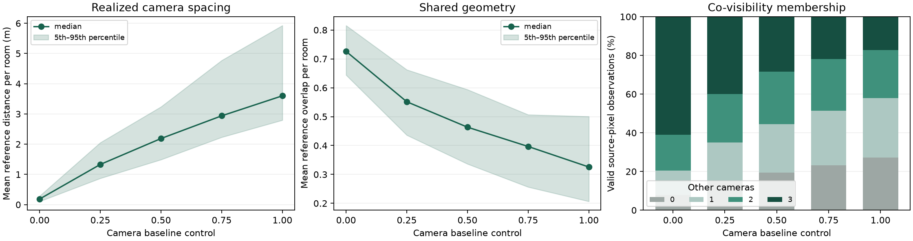
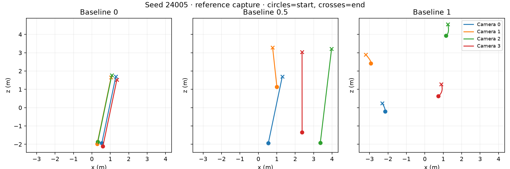

These recorded camera-baseline, annotation and motion examples predate the current polygonal architecture. Their measurements and capture identities are preserved. Explore the latest architectural captures ↗
One room, four synchronized trajectories. Seed 24005 · 120 rendered frames per camera.GIF ↓
8 aligned render modes1–16 co-visibility camerasNative + WebGPU scene & motion viewersSeeded reproducible scene programs
01 / CAMERA BASELINE, MADE VISIBLE
Same room. A wider point of view.
Move from a close camera rig to views spread across the room. The geometry and lighting stay fixed. Watch how perspective and shared surfaces change together.
Balanced
Five native captures along the continuous [0,1] control. Baseline sets a sampling policy; the spacing below is measured in this room.
Selected illustrations with full native lighting, separate from the 128-room baseline sweep. Furniture, people, materials and lighting match by manifest hash. Camera poses and intrinsics are resampled, so camera 0 need not stay in place. Plan footprints are proxies; wedges show direction, not visibility. Shared-pixel percentages pool valid pixels from all four views using the production GPU annotation; glass is a first geometric surface.
02 / MATCHED SUPERVISION
Same room. Same camera. A different way to see it.
Switch cameras, time and annotation. Drag the reveal control to compare against the RGB image from exactly the same capture.
Matched captures · 768 × 480
RGBNormals
50 / 50
View-space unit normals encoded as RGB = (n + 1) / 2. Colors describe surface direction, not material.
Show surfaces shared with
Four views of the same geometry
Camera 0
These two rooms are selected illustrations, not a population sample. Color, depth and label files share scene/camera/time identities. Glass is a first geometric surface for annotations; labels do not follow refracted or reflected light. Website images are visualizations; the downloadable NPZ visibility masks retain exact integer membership.
01
Overlap is a sampling policy.
The Camera baseline slider spans close rigs to wide views. At the default 0.5, reference distances are 1.21–5.175 m with an approximately 29% proxy overlap target. Advanced spacing, spread and path controls remain available, with primary-room and swept-clearance checks.
02
Visibility is measured.
Co-visibility projects each surface into the other capture cameras and checks occlusion. Each camera owns one bit in a lossless 16-bit membership mask; the source camera excludes itself.
03
Supervision stays aligned.
Export RGB, float32 geometric channels, class labels, temporal correspondence, calibration, instance boxes and person joints. O-Voxel covers primary-room geometry in static, single-timestep captures.
03 / SCENES OVER TIME
People and cameras. One capture clock.
Optional ARDY text and waypoint conditioning drives AnnyBody people. Static actors remain supported; motion models initialize only when a configuration requests them.
Two views · two accepted motions. Seed 13 · 120 frames at 20 Hz · forward playback at the model’s generated speed.
TEXT CONDITIONING
“A person scratches the head with the left hand smoothly.”
“A person walks briskly, stops and scratches the head with the left hand, walks again, stops and touches the chest with the left hand, then resumes walking with relaxed shoulders.”
Scene-aware motion
Paths are planned after furnishing, with clearance and motion-admission checks. Capture waits for the scene, pipelines and requested motion to become ready. All views then sample the same normalized trajectory time.
This is an illustrative model output, not a motion-quality benchmark. Contact, hair, cloth and motion naturalness remain approximate. Each video frame is a native render, played at the model’s generated rate.
The camera-baseline reference study covers 512 distinct rendered rooms and a matched sweep. Geometry, lighting and room seeds are held fixed across slider values. All captured rooms contribute.
The baseline charts and interactive gallery are a recorded reference study; they do not remeasure the current architectural cohort. Capture identities and evaluation scopes ↗
Camera baseline: close rigs to wide views
matched reference captures
512distinct rendered rooms6,144 views at default baseline
12,288views across the full experiment1,024 room/configuration captures
The [0,1] Camera baseline slider coordinates reference distance, minimum pair separation, overlap, spread and path variation. Default: 0.5. Advanced edits switch to custom settings; Regenerate applies them. Wider spacing trades shared pixels for stronger viewpoint variation.

Same 128 room seeds, geometry and lighting at each value. Bands show room-level 5th–95th percentiles. Co-visibility fractions count valid source-pixel observations, not unique 3D points.
Matched 128-room camera-baseline sweep · 1,536 views per setting
Baseline
Median room-mean distance
Mean reference overlap
Shared with any peer
Shared with all three
0.00
0.19 m
72.8%
92.1%
61.0%
0.25
1.33 m
55.2%
85.2%
39.9%
0.50
2.19 m
46.5%
80.7%
28.4%
0.75
2.94 m
38.9%
76.9%
22.0%
1.00
3.60 m
32.9%
72.8%
17.3%

Seed 24005 · common metric axes · circles mark starts and crosses mark ends. Camera travel is separate from spacing between views.
Across all 512 rooms at default baseline, mean reference overlap is 45.7% (minimum 16.0%). 210/4,608 observations miss the proxy target and remain reported. 80.3% of valid source pixels are shared with another camera.
These are independent rendered-depth diagnostics; the gallery exports exact production GPU masks using a different surface test. Sweep: four 320 × 240 cameras, three times, native shadows, baked GI disabled. The gallery uses full lighting. No appearance filtering, photographic-realism claim or downstream training qualification.
Room, furnishing, photometry and calibration distributions. Counts retain zero-object rooms. Baselines are sampled at five trajectory times; each plot states its own observation count. Combined figure ↓
Normalized interior placement: object centers, not visible pixels or footprints. Camera paths contribute 33 samples per camera. Each panel is normalized independently; +Z points down. Combined figure ↓
The first eight rooms, unfiltered.
baseline 0.5 · camera 0 · seeds 24000–24007
2400024001240022400324004240052400624007
05 / TECHNICAL WHITEPAPER
Auditable procedural indoor data for multi-view reconstruction.
Mitchell Mosure · September 2026 · Technical report
The paper describes continuous scene programs, material and geometry construction, calibrated multi-view capture, annotations, optional motion, diversity diagnostics and co-visibility distributions across camera-baseline settings.
It reports a bounded generator evaluation. Photographic realism, ten-million-sample learning utility and downstream reconstruction gains remain open evaluation questions.
Compiled from this repository’s TeX paper. It describes current capabilities and separates the architectural audit from the recorded camera-baseline and motion studies. Source files, exact configurations and machine-readable measurements are downloadable. No publication venue or peer-review status is implied.
MAKE YOUR OWN CAPTURES
Start with shared views.
One seeded room, four cameras, RGB and matched geometry. Human motion is optional; this command does not initialize motion models.
Also available: primitive-object scenes, Cornell cube, room and semantic-room scenes, and standalone humans. The native CLI writes datasets; the WebGPU app is an interactive viewer.